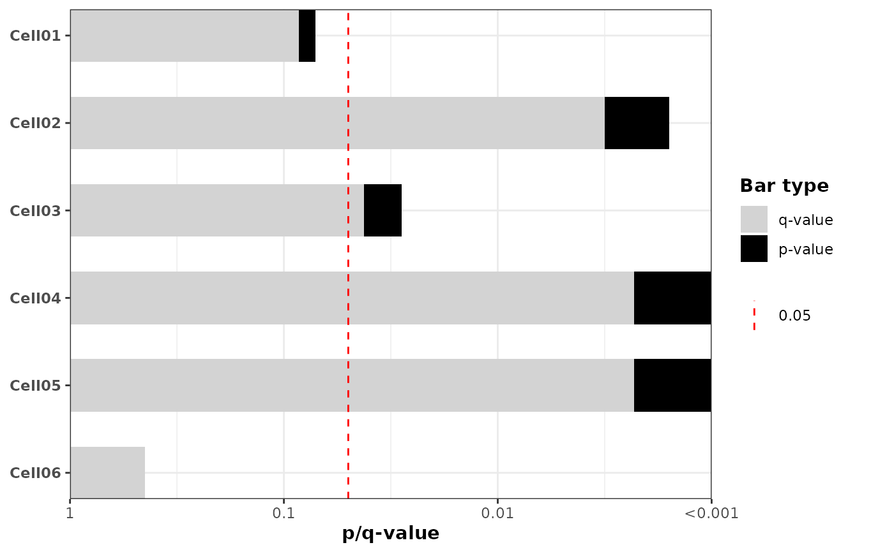

Create a horizontal barplot of p-values (optionally -log10 transformed) with an optional significance vertical line and optional fill mapping.
Usage
plot_pvalue_barplot(
data,
x,
y,
fill = NULL,
alpha = 0.05,
width = 0.6,
xlim = NULL,
xbreaks = NULL,
xlab = "p-value",
vline = TRUE,
vline_linetype = "dashed",
vline_color = "red",
vline_legend = TRUE,
show_y_labels = FALSE,
mlog10_transform_pvalue = FALSE,
also_show_qvalue = TRUE,
custom_qvalues = NULL,
color_qvalue = "grey",
color_pvalue = "black",
legend_title = "Bar type"
)Arguments
- data
A data.frame or tibble containing the variables.
- x
Character, name of the column with raw p-values.
NAvalues are allowed; rows withNAare retained on the y-axis but drawn without a bar.- y
Character, name of the column for y-axis categories (factor or character).
- fill
Character or NULL, column name to use for fill; if NULL draw solid black bars. Ignored when also_show_qvalue = TRUE.
- alpha
Numeric significance threshold for the vertical line (default 0.05). When mlog10_transform_pvalue = TRUE the vertical line is drawn at -log10(alpha).
- width
Numeric bar width (passed to geom_col).
- xlim
Numeric vector of length 2 giving x-axis limits; computed if NULL.
- xbreaks
Numeric vector of x-axis breaks; computed if NULL.
- xlab
Character, x-axis label.
- vline
Logical, whether to draw a vertical line at alpha (or -log10(alpha)).
- vline_linetype
Character, linetype for the vertical line.
- vline_color
Character, color for the vertical line.
- vline_legend
Logical, whether to include a legend entry for the vertical significance line (default
TRUE). WhenTRUEa legend key showing thealphavalue is added; whenFALSEthe line is drawn without a legend.- show_y_labels
Logical, whether to show y-axis labels (default FALSE).
- mlog10_transform_pvalue
Logical; when TRUE compute -log10(p) for plotting/order and format x-axis tick labels as p-values (10^-x).
- also_show_qvalue
Logical; when TRUE compute FDR-adjusted q-values (Benjamini-Hochberg) (or use custom_qvalues if supplied) and draw two overlapping bars per row: both p and q are shown. Note on drawing order:
If mlog10_transform_pvalue = TRUE the p-value bar is drawn first (behind) and the q-value bar is drawn on top.
If mlog10_transform_pvalue = FALSE the q-value bar is drawn first (behind) and the p-value bar is drawn on top. When TRUE, the 'fill' argument is ignored and fixed colors are used for p/q bars.
- custom_qvalues
Character or NULL; column name in
datacontaining user-supplied q-values. When supplied andalso_show_qvalue = TRUE, these values are used instead of computing FDR-adjusted q-values.NAvalues are allowed and result in no q-value bar for that row.- color_qvalue
Character, color for q-value bars when also_show_qvalue = TRUE.
- color_pvalue
Character, color for p-value bars when also_show_qvalue = TRUE.
- legend_title
Character, title for the legend when also_show_qvalue = TRUE. Default is 'Bar type'.
Examples
set.seed(123)
n <- 4
example_df <- tibble::tibble(
cell_line = paste0("Cell", sprintf("%02d", 1:n)),
pvalue = 10^(-runif(n, 0.2, 2.8)),
group = rep(c("A", "B"), length.out = n)
)
example_df$cell_line <- factor(
example_df$cell_line,
levels = rev(example_df$cell_line)
)
plot_pvalue_barplot(
data = example_df,
x = "pvalue",
y = "cell_line",
fill = NULL,
mlog10_transform_pvalue = TRUE,
show_y_labels = TRUE,
also_show_qvalue = TRUE
)
